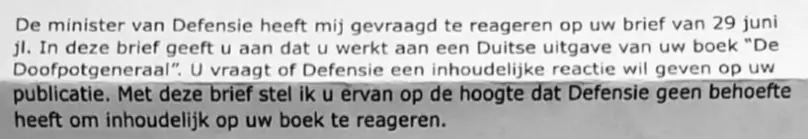

Beweisstück · Brief
Verteidigungsministerium verzichtet auf eine inhaltliche Antwort, 29. Juli 2020
Die Passage
„Die Verteidigungsministerin hat mich gebeten, auf Ihren Brief vom 29. Juni d. J. zu antworten. In diesem Brief teilen Sie mit, dass Sie an einer deutschen Ausgabe Ihres Buches ‚De Doofpotgeneraal‘ arbeiten. Sie fragen, ob das Verteidigungsministerium eine inhaltliche Antwort auf Ihre Veröffentlichung geben will. Mit diesem Brief setze ich Sie davon in Kenntnis, dass das Verteidigungsministerium kein Bedürfnis hat, inhaltlich auf Ihr Buch zu reagieren.“ Seite 1, der vollständige Text des Briefes, die fünf Zeilen zwischen Anrede und Schlussformel. Aus dem Niederländischen übersetzt; der Originaltext steht unten. De doofpotgeneraal ist der niederländische Originaltitel des Buches Der Cover-up-General.
Originaltext
“De minister van Defensie heeft mij gevraagd te reageren op uw brief van 29 juni jl. In deze brief geeft u aan dat u werkt aan een Duitse uitgave van uw boek ‘De Doofpotgeneraal’. U vraagt of Defensie een inhoudelijke reactie wil geven op uw publicatie. Met deze brief stel ik u ervan op de hoogte dat Defensie geen behoefte heeft om inhoudelijk op uw boek te reageren.” Der Brief schreibt den Buchtitel als „De Doofpotgeneraal“, mit großem Anfangsbuchstaben bei beiden Wörtern, während das Buch selbst De doofpotgeneraal heißt; er eröffnet den Titel mit einem geraden doppelten Anführungszeichen und schließt ihn mit einem typografischen; beide sind hier als einfache Anführungszeichen innerhalb des Zitats wiedergegeben.

Warum dieses Dokument wichtig ist
In diesem Brief teilt das Verteidigungsministerium mit, es habe „kein Bedürfnis“, inhaltlich auf das Buch zu reagieren, ohne dafür einen Grund zu nennen. Der Essay legt dar, dass Giltay nach dem Urteil des Obersten Gerichtshofs der Niederlande im Jahr 2019 erneut nichts vom Verteidigungsministerium hörte. In diesem Verfahren, in dem die Niederlande teilweise für etwa 350 Tote von Srebrenica haftbar gemacht wurden, hatten sich die Anwälte der Mütter von Srebrenica neben Dutzenden anderer Quellen auf das Buch berufen. 2020 forderte Giltay das Ministerium nochmals förmlich auf, inhaltlich zu reagieren, diesmal im Hinblick auf eine Übersetzung. Dieser Brief ist die Antwort.
Herkunft
- Dokument
- Brief, eine Seite, auf Briefpapier des Verteidigungsministeriums
- Absender
- Verteidigungsministerium, Direktion Kommunikation, Kalvermarkt, Den Haag, auf Bitten der Verteidigungsministerin
- Empfänger
- E. Giltay
- Datum
- 29. Juli 2020
- Geschäftszeichen
- BS2020015360
- Betreff
- „Uw brief van 29 juni jl. over een inhoudelijke reactie op De Doofpotgeneraal“ (Ihr Brief vom 29. Juni d. J. über eine inhaltliche Antwort auf De Doofpotgeneraal)
- Bezug
- Giltays Brief vom 29. Juni 2020, in dem er fragte, ob das Verteidigungsministerium inhaltlich reagieren wolle, und mitteilte, dass er an einer deutschen Ausgabe des Buches arbeite
- Berufungsbegründung
- Die Berufungsbegründung der Mütter von Srebrenica (7. Juli 2015, 330 Seiten) führt das Buch neben Dutzenden anderer Quellen an, darunter der NIOD-Bericht, der Bericht des parlamentarischen Untersuchungsausschusses und Entscheidungen des Jugoslawien-Tribunals, vandiepen.
com/ wp-content/ uploads/ 2023/ 07/ 15-mvs_grieven_7-7-2015.pdf - Unterzeichnet
- Von drs. K.A. Meijer, Sprecher der Direktion Kommunikation, auf Bitten der Verteidigungsministerin; die handschriftliche Unterschrift ist in diesem PDF geschwärzt
- Sprache
- Niederländisch
- Seiten
- 1; das Blatt selbst ist mit „Pagina 1 van 1“ (Seite 1 von 1) nummeriert
- Aufbewahrt bei
- Edwin Giltay, der Empfänger
- Siehe auch
- Mütter von Srebrenica, Berufungsbegründung, 7. Juli 2015Oberster Gerichtshof der Niederlande, Urteil vom 19. Juli 2019 (ECLI:NL:HR:2019:1223)
Zitiert in: dem Essay „Das Verbot fiel, das Buch hielt stand“ in den Kapiteln (3) „Was das Buch enthüllt: die Srebrenica-Vertuschung“ und (7) „Nie eine inhaltliche Antwort“.
Beweiskarte: https://
Dokument: https://
Zuletzt geändert am 13. September 2026, abgerufen am 9. Oktober 2026.

Diese Seite ist ein Beweisstück zum Buch Der Cover-up-General von Edwin Giltay und zur dazugehörigen Website.